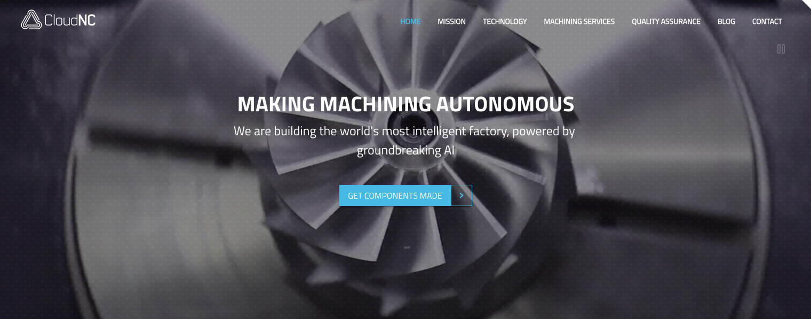
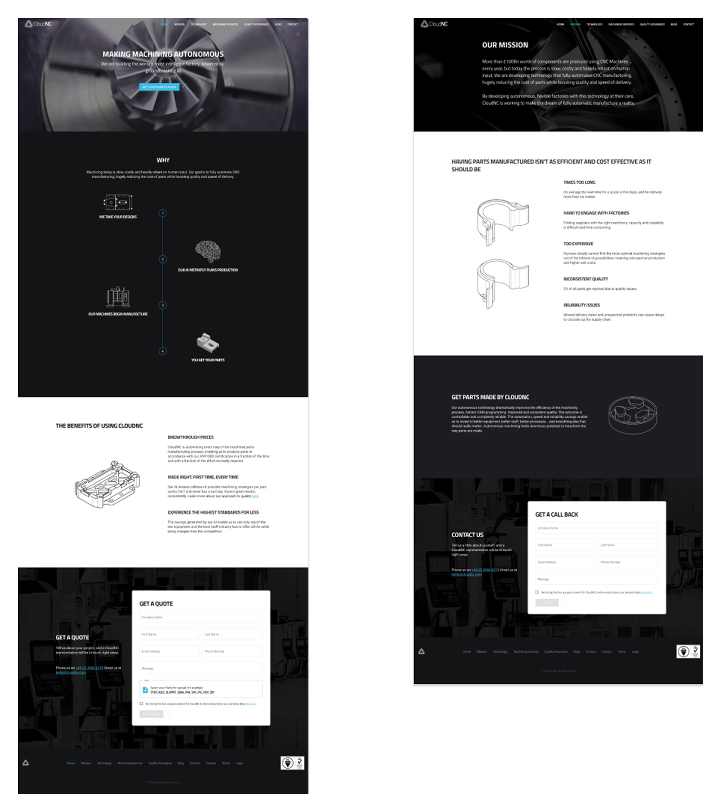
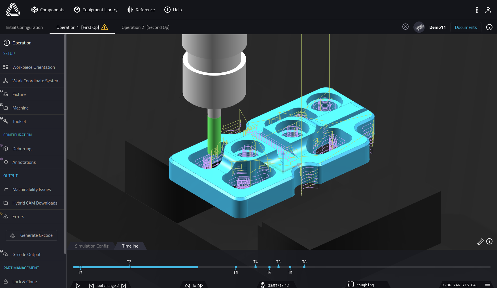
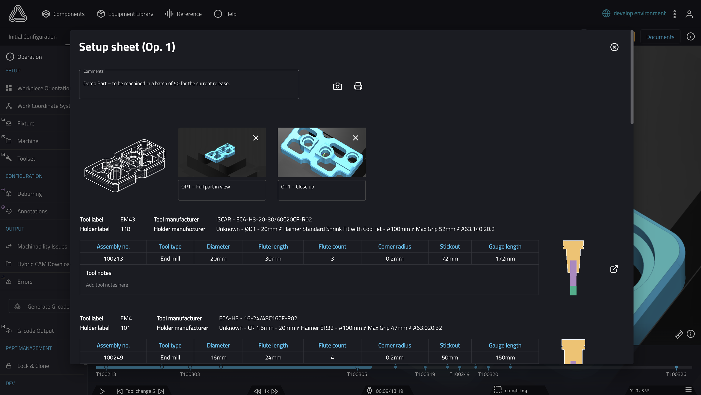
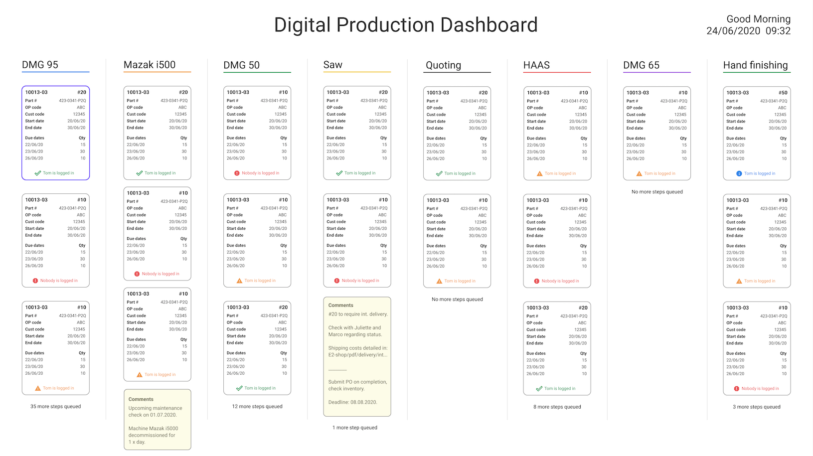
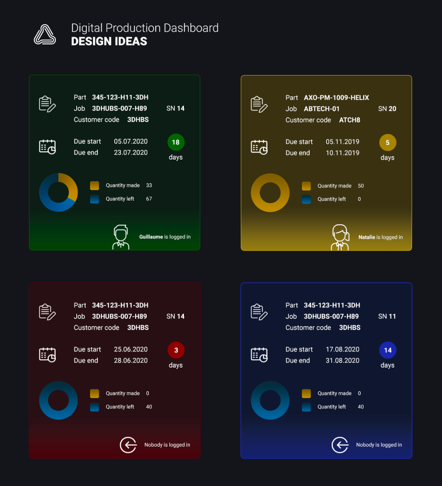
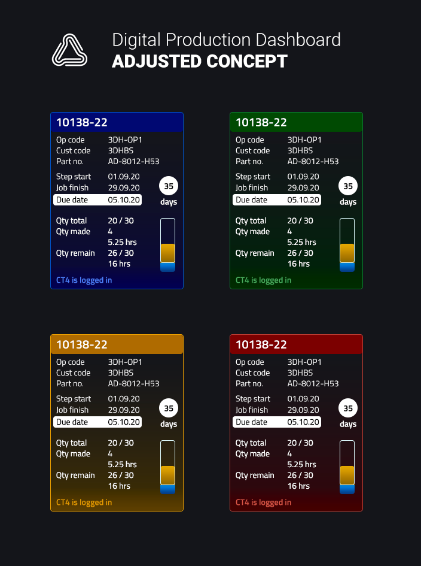
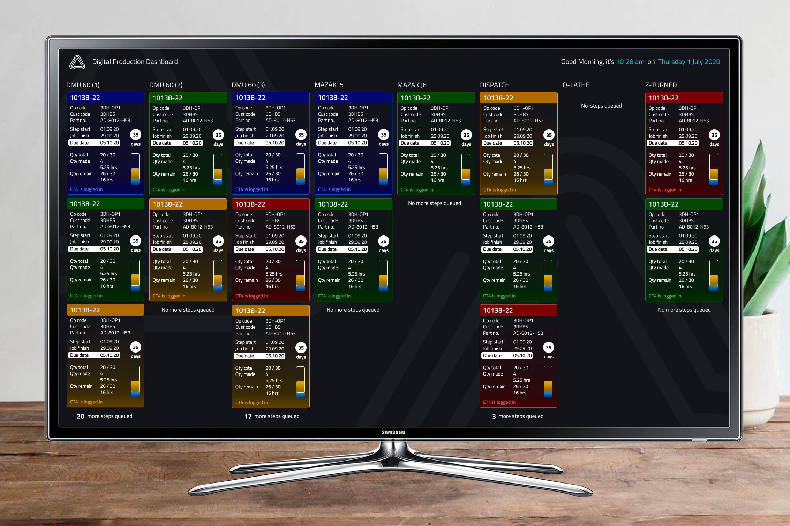

Product Design : CloudNC
Context
CloudNC develops software to automate CNC manufacturing through simulation-driven toolpath generation. The platform combines 3D geometry, optimisation algorithms, and real-world machining constraints to produce efficient manufacturing outputs.
I joined initially on a short-term contract and transitioned into a permanent role within the technology team, contributing across both product and frontend implementation in a highly technical domain.
My Role
Worked across product design and frontend development, focusing on designing and implementing interfaces for complex, geometry-driven workflows. Contributed to UI structure, theming, and interaction design across multiple areas of the product and supporting tools.
Outcome
- Improved clarity and usability across complex manufacturing workflows.
- Delivered production-ready UI aligned with engineering constraints.
- Supported development of scalable interfaces for simulation-driven software.
Overview
CloudNC automates CNC manufacturing by generating optimal toolpaths from 3D models, enabling faster production and reducing manual intervention. The system integrates simulation, tooling constraints, and manufacturing logic into a single workflow.
Team and Environment
- Worked within a cross-functional team of frontend and backend engineers alongside a UX designer.
- Collaborated closely with engineering in an Agile environment with two-week sprints and continuous iteration.
Key Contributions
My work spanned multiple areas across both product and supporting systems, including:
- Designing and building a responsive website for Series A fundraising.
- Contributing to UI design and theming within the AMT simulation software.
- Designing a real-time production dashboard for factory operations.
Website Development (Series A Fundraising)
Designed and delivered a responsive website under tight deadlines to support Series A fundraising.
- Worked across mobile, tablet, and desktop breakpoints.
- Implemented modular HTML and Sass within Angular components.
- Balanced visual design with performance and maintainability.
This work required balancing visual design with performance, responsiveness, and maintainability within an engineering-led codebase.


AMT Software (Simulation and Toolpath Generation)
Contributed to the design of a multi-level CNC machining simulator used to generate toolpaths, tooling configurations, and setup instructions from 3D geometry.
- Supported complex workflows involving geometry interpretation, tooling constraints, and optimisation outputs.
- Structured information and interaction patterns to improve clarity and usability.
- Maintained visual consistency while working within technical constraints of the underlying system.

Setup Sheet Redesign
Redesigned the setup sheet used by CNC machinists to interpret tool requirements, machining steps, and estimated timings.
- Improved information hierarchy and clarity through usability testing.
- Iterated on both digital and print layouts to improve structure and readability.
- Reduced time required for machinists to interpret manufacturing instructions.

Production Dashboard (Factory Operations)
Designed and delivered a real-time dashboard for monitoring factory operations across multiple work centres, including machining progress, downtime, and resource planning.
- Led design and coordination from concept through to implementation, aligning stakeholder and operational requirements.
- Structured the interface to support 48 work centres across multiple views.
- Balanced high information density with readability for large-screen display.

Design Iteration
Initial designs aligned visually with the AMT system, using colour to communicate machine status and operational states. Iterated on data visualisation elements, including charting approaches, to better communicate production metrics.

Refined designs based on feedback and evolving requirements, improving clarity of production metrics and ensuring consistency in how data was represented across the dashboard.

The final design was implemented and adopted by the operations team, providing a clear, real-time view of factory performance and enabling more efficient decision-making on the shop floor.
Closing
This work involved designing interfaces for a highly technical domain, balancing complex system constraints with usability. The focus was on structuring information clearly and supporting efficient workflows in a simulation-driven environment.
